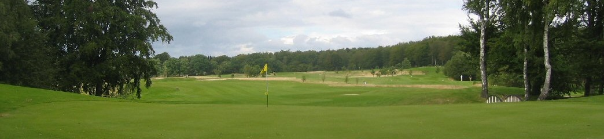
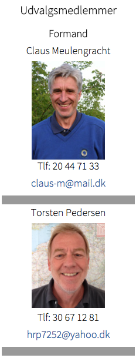
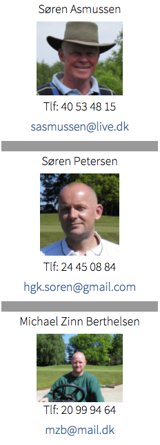

<div class="pages">
  <div data-page="bane" class="page navbar-fixed toolbar-fixed" >
    <div class="navbar">
      <div class="navbar-inner">
        <div class="left">
          <a href="#" class="link back icon-only"><i class="icon icon-back"></i></a>
          <!-- <a href="#" class="back link icon-only"><i class="icon icon-back"></i></a> -->
        </div>
        <div class="center">Baneudvalget</div>
        <!-- <div class="right"></div> -->
        <div class="right">
        </div>
      </div>
    </div>
    <div class="page-content" style="padding-top:45px;">
       <div class="content-block">
          
          <p>Det overordnede ansvar for bane, udenomsarealer, værksted og maskinpark påhviler Baneudvalget.
              <br /><br />
              Udvalget har ansvaret for:<br />
              • vedligeholdelse og forbedring af eksisterende baneanlæg<br />
              • vedligeholdelse og forbedring af alle udenomsarealer (indkørsel, P-plads, opholdsarealer, skel etc.)<br />
              • vedligeholdelse af værksted, frokoststue og pumpehus<br />
              • vedligeholdelse og indkøb af maskinpark<br />
              <br />            
              Masterplan<br />
              Der er i 2006 udarbejdet en Masterplan for banen. Denne kan ses her. Der er efterfølgende foretaget enkelte korrektioner. Hvordan arbejdet skrider frem kan ses på fanebladet "Banen"</p>
          
          
        </div>
    </div>
    </div>
    </div>
  </div>
</div>
